1.1 转换文本大小写
1.1 Convert Text Case
Annotate 的大小写转换工具可以更改大多数项目元素的文本内容，并可选包含诸如（字符串）属性和参数之类的设置。若只想转换某一部分选定项目的大小写，请先选中它们。要启动转换工具，请点击菜单项 CI Tools > Annotate > Convert Case…（转换大小写）
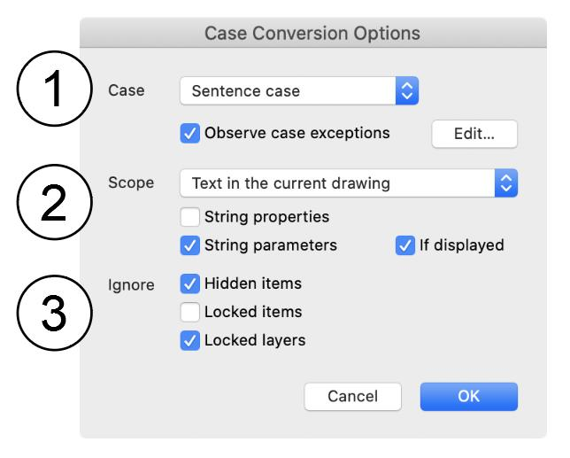
首先会弹出 Case Conversion Options（大小写转换选项）对话框。请从以下选项中选择：
- Case（大小写）指定所需的文本大小写，以及是否需要遵守例外情况。可选项包括：
- Sentence case（句首字母大写）
- UPPER CASE（全大写）
- lower case（全小写）
- Title Case（标题式大小写）
如果某些单词或缩写应保持固定大小写，请勾选 Observe case exceptions（遵守大小写例外）。此时会出现一个 Edit（编辑）按钮用于查看这些例外（详见 1.2 节）。
- Scope（范围）指定文本转换的范围，包括：
Selected items only（仅选定项目） . 若在活动图纸视图中未选中任何内容，则该选项不可用。
- Text in the current drawing（当前图纸中的文本） . 仅影响活动的图纸视图。若当前为平面图，则仅针对当前楼层。
- Text in floor plan (all storeys)（平面图中的文本，所有楼层） . 平面图中的所有楼层都将被处理。
- Text in all drawings（所有图纸中的文本）。所有图纸，包括剖面图、详图等都将被处理。
勾选 String properties（字符串属性）可转换任意字符串属性值。请注意，这不会影响从预设选项菜单中选取的文本 —— 若要更改这类文本，请使用属性管理器（Property Manager）。
勾选 String parameters（字符串参数）可转换参数文本。已锁定或隐藏的参数不会受到影响（因为它们大概不是要更改的对象）。若选择了 If displayed（如果已显示）选项，则只有与对象在 2D 中当前显示的文本完全匹配的字符串参数值才会被转换。如果该对象还含有其他可见、未锁定且不应更改的文本，此选项要安全得多。
- Ignore（忽略）选择任何不应被转换的项目或图层，包括：
Hidden items（隐藏项目） ，例如隐藏图层上的所有内容；
- Locked items（锁定项目） ，即已被显式锁定的元素；
- Locked layers（锁定图层） ，例如锁定图层上的所有内容。
点击 Ok（确定）开始转换过程。
Annotate’s case conversion tool can change the text content of most project elements, optionally including settings like (string) properties and parameters. To convert the case of just a selection of items, pick them first. To start the conversion tool, click the menu item CI Tools > Annotate > Convert Case…
The Case Conversion Options dialog appears first. Pick from the following:
- Case Specify the required text case and whether any exceptions should be observed. Options include:
- Sentence case
- UPPER CASE
- lower case
- Title Case
Select Observe case exceptions if some words or abbreviations should have a fixed case. An Edit button will appear for reviewing the exceptions (see section 1.2 for more details).
- Scope Specify the scope of the text conversion, including:
Selected items only . Disabled if nothing is selected in the active drawing view.
- Text in the current drawing . Only the active drawing view will be affected. If the floor plan is active, only the current storey will be targeted.
- Text in floor plan (all storeys) . All stories in the floor plan will be targeted.
- Text in all drawings. All drawings, including sections, worksheets etc will be targeted.
Select String properties to convert any string property values. Note that this will not affect text picked from a menu of pre-determined choices – if you want to change that, use the Property Manager.
Select String parameters to convert parameter text. Locked or hidden parameters will not be affected (on the basis that they are probably not intended to be changed). If the option setting If displayed is selected, only string parameter values exactly matching text currently displayed by the object in 2D will be converted. This is a much safer option if the object holds other visible, unlocked text that shouldn’t be changed.
- Ignore Select any items or layers that shouldn’t be converted, including:
Hidden items , e.g. everything on hidden layers;
- Locked items , i.e. where the element has been explicitly locked;
- Locked layers , e.g. everything on locked layers.
Click Okto begin the conversion process.
英文原文对照Official English Original
Annotate’s case conversion tool can change the text content of most project elements, optionally including settings like (string) properties and parameters. To convert the case of just a selection of items, pick them first. To start the conversion tool, click the menu item CI Tools > Annotate > Convert Case…
The Case Conversion Options dialog appears first. Pick from the following:
- Case Specify the required text case and whether any exceptions should be observed. Options include:
- Sentence case
- UPPER CASE
- lower case
- Title Case
Select Observe case exceptions if some words or abbreviations should have a fixed case. An Edit button will appear for reviewing the exceptions (see section 1.2 for more details).
- Scope Specify the scope of the text conversion, including:
Selected items only . Disabled if nothing is selected in the active drawing view.
- Text in the current drawing . Only the active drawing view will be affected. If the floor plan is active, only the current storey will be targeted.
- Text in floor plan (all storeys) . All stories in the floor plan will be targeted.
- Text in all drawings. All drawings, including sections, worksheets etc will be targeted.
Select String properties to convert any string property values. Note that this will not affect text picked from a menu of pre-determined choices – if you want to change that, use the Property Manager.
Select String parameters to convert parameter text. Locked or hidden parameters will not be affected (on the basis that they are probably not intended to be changed). If the option setting If displayed is selected, only string parameter values exactly matching text currently displayed by the object in 2D will be converted. This is a much safer option if the object holds other visible, unlocked text that shouldn’t be changed.
- Ignore Select any items or layers that shouldn’t be converted, including:
Hidden items , e.g. everything on hidden layers;
- Locked items , i.e. where the element has been explicitly locked;
- Locked layers , e.g. everything on locked layers.
Click Okto begin the conversion process.
1.2 管理大小写例外
1.2 Manage Case Exceptions
Case Exception Manager（大小写例外管理器）收集那些无论一般文本采用何种标准都应保持固定大小写的单词或缩写。可在 Case Conversion Options（大小写转换选项）对话框中点击 Edit（编辑）按钮查看该管理器，也可点击菜单 CI Tools > Annotate > Manage Case Exceptions…（管理大小写例外）
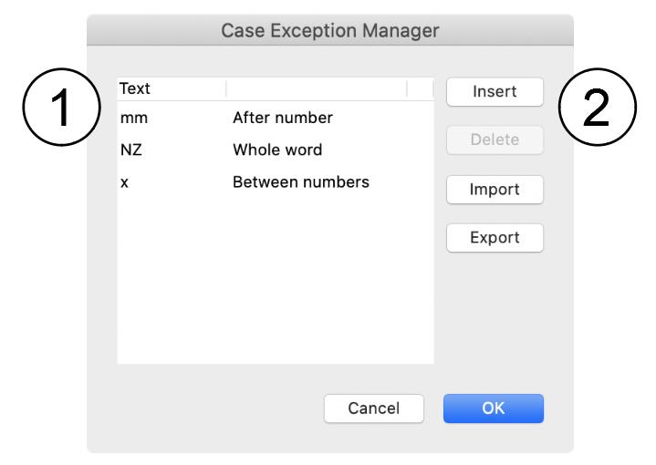
例外列表与项目相关，但可以导出后导入到其他项目。该管理器对话框包含以下内容：
- 例外列表
列表分为 2 列，两列都可在列表中直接编辑：
- Text（文本）字面文本，即其在文档中应呈现的大小写形式。
- Context（上下文）此例外所适用的上下文
例如，millimetre（毫米）的缩写 mm 通常为小写，但我们不希望任何含有双 m 的单词受到影响，例如 "common" 被转换为 "COmmON"。该单位应跟在数字之后，例如 100mm，因此上下文应设置为 "After number"（数字之后）。对于整个单词都应使用特定大小写的情况（例如专有名词），上下文可设置为 "Entire word"（整个单词）。如果一系列字母、符号甚至单词无论出现在何处都应采用特定大小写，则上下文为 "Anywhere"（任意位置）。请注意，对于任何包含非字母数字字符（如 "." 或 "?"）的表达式，必须选择 "Anywhere"。
- 右侧的按钮提供附加功能：
- Insert（插入）在列表中插入一条新例外
- Delete（删除）从列表中删除所选例外
- Import（导入）从文件导入大小写例外
- Export（导出）将当前的大小写例外列表导出到文件
大小写例外文件的扩展名为 .keycase。
点击 "Ok"（确定）保存对大小写例外的更改，点击 "Cancel"（取消）则放弃更改。
The Case Exception Managercollects words or abbreviations that should have a fixed case irrespective of the standard for the general text. The manager can be viewed by clicking the Editbutton from the Case Conversion Options dialog, or by clicking the menu CI Tools > Annotate > Manage Case Exceptions…
The list of exceptions is project-specific, but can be exported for import into other projects. The manager dialog features include:
- The exception list
The list is divided into 2 columns, both of which can be edited directly in the list:
- Text The literal text, i.e. with the case as it should appear in the document.
- Context The context in which this exception is relevant
For example, the abbreviation of millimetre to mm is usually lower case, but we don’t want to see any word containing double-m to be affected, e.g. “common” converted to “COmmON”. The unit would be expected to follow a number, e.g. 100mm, so the context should be set to “After number”. An entire word that should have a specific case, e.g. a proper noun, could have the context as “Entire word”. If a series of letters, symbols or even words should have have a specific case no matter where they occur, the context will be “Anywhere”. Note that “Anywhere” must be selected for any expression that contains non-alphanumeric characters such as “.” or “?”.
- The buttons to the right provide additional functionality:
- Insert Insert a new exception in the list
- Delete Delete the selected exception(s) from the list
- Import Import case exceptions from a file
- Export Export the current list of case exceptions to a file
Case exception files have the .keycase extension.
Changes to the case exceptions are saved on clicking “Ok” or discarded with “Cancel”.
英文原文对照Official English Original
The Case Exception Managercollects words or abbreviations that should have a fixed case irrespective of the standard for the general text. The manager can be viewed by clicking the Editbutton from the Case Conversion Options dialog, or by clicking the menu CI Tools > Annotate > Manage Case Exceptions…
The list of exceptions is project-specific, but can be exported for import into other projects. The manager dialog features include:
- The exception list
The list is divided into 2 columns, both of which can be edited directly in the list:
- Text The literal text, i.e. with the case as it should appear in the document.
- Context The context in which this exception is relevant
For example, the abbreviation of millimetre to mm is usually lower case, but we don’t want to see any word containing double-m to be affected, e.g. “common” converted to “COmmON”. The unit would be expected to follow a number, e.g. 100mm, so the context should be set to “After number”. An entire word that should have a specific case, e.g. a proper noun, could have the context as “Entire word”. If a series of letters, symbols or even words should have have a specific case no matter where they occur, the context will be “Anywhere”. Note that “Anywhere” must be selected for any expression that contains non-alphanumeric characters such as “.” or “?”.
- The buttons to the right provide additional functionality:
- Insert Insert a new exception in the list
- Delete Delete the selected exception(s) from the list
- Import Import case exceptions from a file
- Export Export the current list of case exceptions to a file
Case exception files have the .keycase extension.
Changes to the case exceptions are saved on clicking “Ok” or discarded with “Cancel”.
使用 CI Tools Annotate 进行属性替换
Attribute Replacement using Ci Tools Annotate
属性替换
Annotate 工具能够同时更改项目中的多个属性。这对于批量修改那些可能源自 Archicad 之外的 Archicad 文件或图纸尤其有用。
Annotate 工具位于 CI Tools 下拉菜单中：
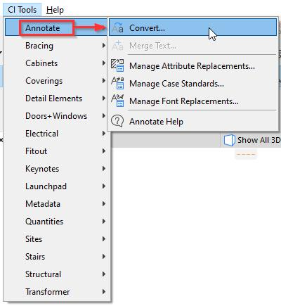
点击 Convert（转换）菜单项后，Annotate 工具可替换：
- Fills（填充）
- Pens（画笔）
- Linetypes（线型）
- Fonts（字体）
- Text Case conversion（文本大小写转换）
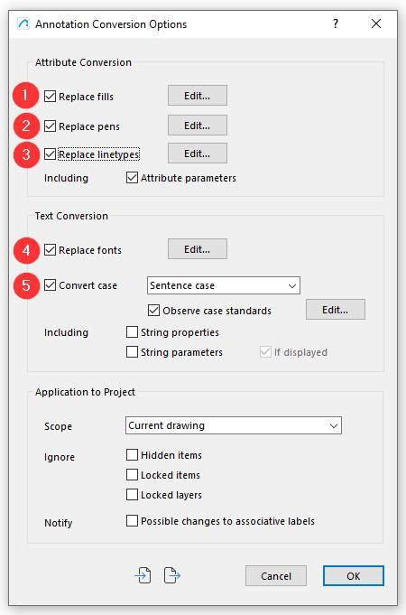
下面我们逐一介绍各个菜单。
请注意，这三个 Edit（编辑）按钮都会打开属性替换管理器（Attribute Replacement Manager），在其中可以进行映射；Edit 按钮只会默认选中你点击的那一部分。点击 Replace Linetypes（替换线型）旁的 Edit 按钮会默认定位到该界面的 Linetypes（线型）选项，但三个选项在同一界面中都可以访问。见下文：
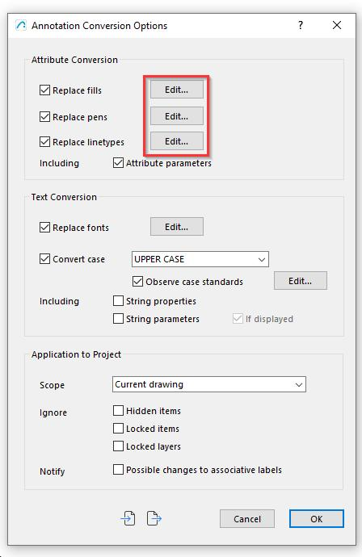
属性替换管理器
**
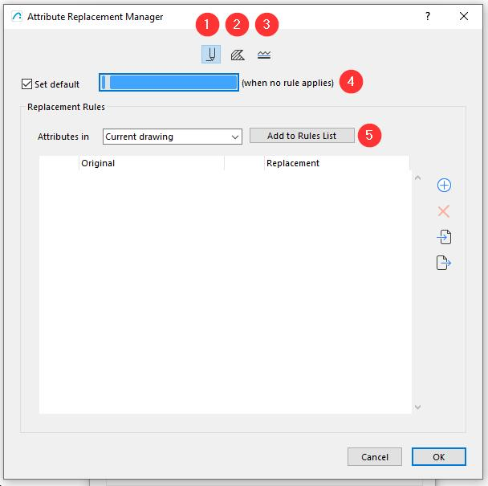
**
1 Pen Type（画笔类型）
选择画笔覆盖映射
2 Fill Type（填充类型）
选择填充覆盖映射
3 Line Type（线型）
线型覆盖映射
4 Default value（默认值）
勾选后，若未添加任何规则，则该画笔类型将应用到所有线条；若已定义部分规则，则应用于所有未定义规则的画笔。
5 Add Rules to list（向列表添加规则）
可以自动填充属性规则列表，并从以下位置添加画笔、填充与线型：
Selected Items only（仅所选项目） 仅选中的元素
Current Drawing（当前图纸） 当前图纸中的全部元素
Plan (all storeys)（平面图，所有楼层） 所有平面视图中的全部元素
Entire Project（整个项目） 整个项目中的全部元素
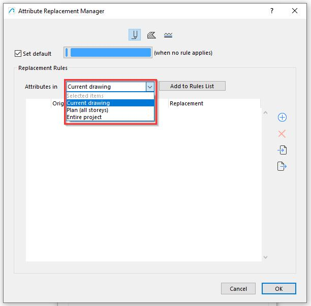
我们将使用 Current Drawing（当前图纸）。
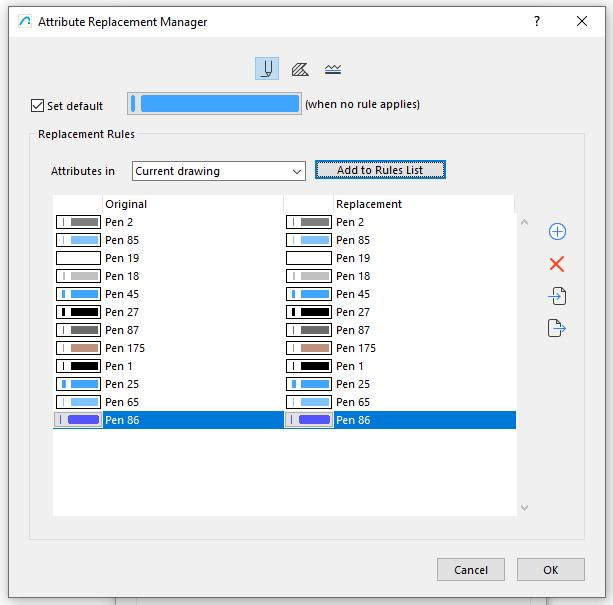
现在已填充出待调整的画笔，列表左侧的每个画笔都可以单独替换为右侧列表中你选择的画笔。
在此选择中，我们用画笔 2 替换画笔 23，请见下文：
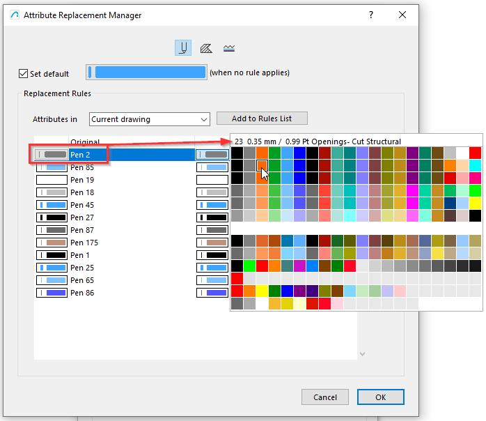
通过这种方式，我们可以为每个画笔指定不同的画笔类型。
在这个对话框中还可以进行以下操作：
1 手动添加规则
2 删除规则
3 导入从另一个项目保存的规则
4 导出规则，供在另一个项目中使用
请见下文：
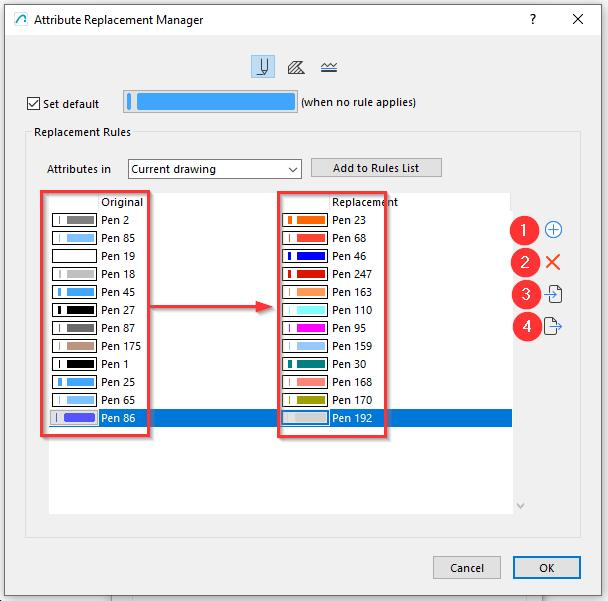
同样地，每种填充类型既可以改为默认填充，也可以应用所选的填充替换。
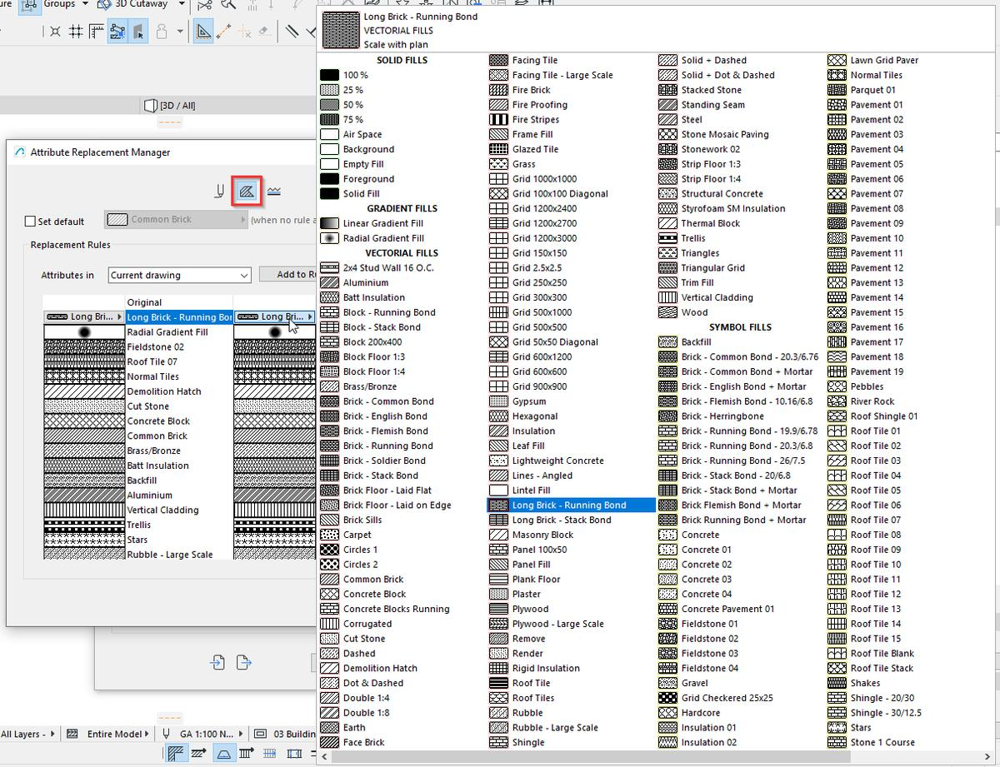
线型可以通过将左侧面板映射到右侧来更改：
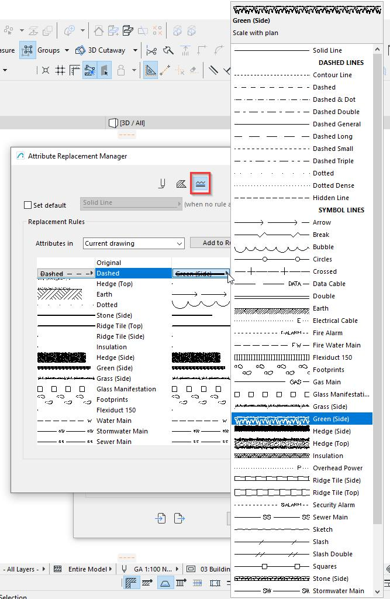
重要：
请注意，替换规则将依据对话框中 Application to Project（应用于项目）部分的条件，应用于全部填充、线型与画笔；因此必须在此处限定并控制映射的应用范围。请见下文：
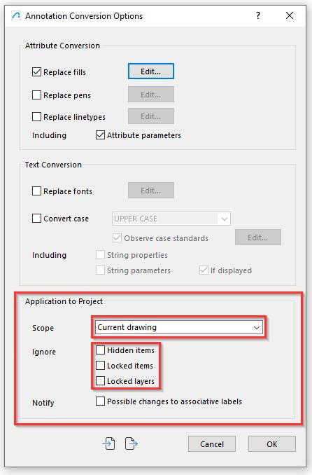
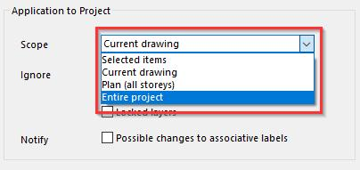
Attribute Replacement
The Annotate tool has the ability to change several attributes in a project simultaneously. This is especially helpful in making bulk changes to Archicad files or drawings that may have originated outside of Archicad.
The Annotate Tool is accessed under the CI Tools dropdown:
By Clicking on the Convert Menu item, the Annotate Tool allows for the replacement of:
- Fills
- Pens
- Linetypes
- Fonts
- Text Case conversion
Let us look at the separate menu’s individually.
Please note that any of these three ‘Edit’ buttons bring up the Attribute Replacement Manager, where mapping can take place, the ‘Edit’ button only selects the part that you have clicked on by default. Clicking on the ‘Edit’ button next to Replace Linetypes defaults to the Linetypes part of that Interface, but all three are accessible in that one interface. See below:
Attribute Replacement Manager
**
**
1 Pen Type
Choice of Pen override mapping
2 Fill Type
Choice of Fill override mapping
3 Line Type
Linetype override mapping
4 Default value
When checked this pen type is applied to all lines, if no rules are added, or applied to all Pens that do not have a Rule defined.
5 Add Rules to list
One can automatically populate the Attributes rules list and add the Pens, Fills and Linetypes from:
Selected Items only Only the selected elements
Current Drawing All elements in the Current Drawing
Plan (all storeys) All elements in all Plan views
Entire Project All elements in the Entire Project
We will use Current Drawing.
The Pens used is now populated for adjustment, each pen in the list to the left can now be individually substituted with a pen of your choice in the list to the right.
In this choice we substitute Pen 2 for Pen 23, please see below:
In this way we can assign each Pen to a different Pen type.
We can also do the following in this dialogue:
1 Add Rule manually
2 Delete Rules
3 Import Rules that have been saved from another Project
4 Export Rules for use in another Project
Please see below:
In the same way each of the Fill Types can be either changed to a Default Fill, or selected Fill replacements can be applied.
The Linetype can be changed by mapping the Left pane onto the Right:
Important:
Please note that the replacement rules will apply to all Fills, Linetypes and Pens based on criteria in the ‘Application to Project’ part of the Dialogue, it is important to limit and control the desired application of your mapping in this selection. Please see below:
英文原文对照Official English Original
Attribute Replacement
The Annotate tool has the ability to change several attributes in a project simultaneously. This is especially helpful in making bulk changes to Archicad files or drawings that may have originated outside of Archicad.
The Annotate Tool is accessed under the CI Tools dropdown:
By Clicking on the Convert Menu item, the Annotate Tool allows for the replacement of:
- Fills
- Pens
- Linetypes
- Fonts
- Text Case conversion
Let us look at the separate menu’s individually.
Please note that any of these three ‘Edit’ buttons bring up the Attribute Replacement Manager, where mapping can take place, the ‘Edit’ button only selects the part that you have clicked on by default. Clicking on the ‘Edit’ button next to Replace Linetypes defaults to the Linetypes part of that Interface, but all three are accessible in that one interface. See below:
Attribute Replacement Manager
**
**
1 Pen Type
Choice of Pen override mapping
2 Fill Type
Choice of Fill override mapping
3 Line Type
Linetype override mapping
4 Default value
When checked this pen type is applied to all lines, if no rules are added, or applied to all Pens that do not have a Rule defined.
5 Add Rules to list
One can automatically populate the Attributes rules list and add the Pens, Fills and Linetypes from:
Selected Items only Only the selected elements
Current Drawing All elements in the Current Drawing
Plan (all storeys) All elements in all Plan views
Entire Project All elements in the Entire Project
We will use Current Drawing.
The Pens used is now populated for adjustment, each pen in the list to the left can now be individually substituted with a pen of your choice in the list to the right.
In this choice we substitute Pen 2 for Pen 23, please see below:
In this way we can assign each Pen to a different Pen type.
We can also do the following in this dialogue:
1 Add Rule manually
2 Delete Rules
3 Import Rules that have been saved from another Project
4 Export Rules for use in another Project
Please see below:
In the same way each of the Fill Types can be either changed to a Default Fill, or selected Fill replacements can be applied.
The Linetype can be changed by mapping the Left pane onto the Right:
Important:
Please note that the replacement rules will apply to all Fills, Linetypes and Pens based on criteria in the ‘Application to Project’ part of the Dialogue, it is important to limit and control the desired application of your mapping in this selection. Please see below:
使用 CI Tools Annotate 替换字体
Replacing Fonts using Ci Tools Annotate
Archicad 29 中的 Annotate 现在支持替换字体：
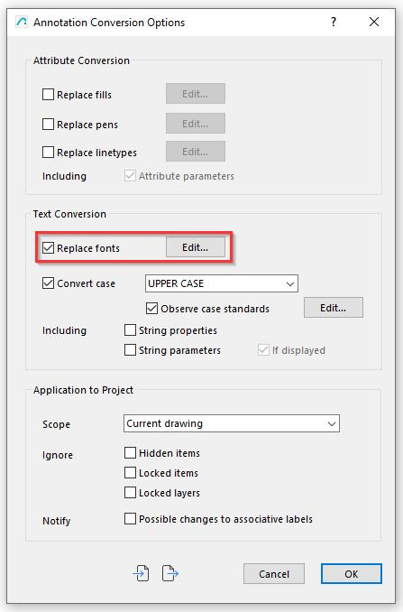
勾选 Replace Fonts（替换字体）复选框后，点击 Edit（编辑）即可启动基于规则的字体替换管理器。
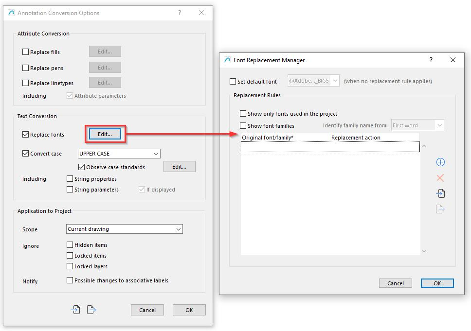
Set Default Font（设置默认字体）会把默认字体应用到所有未分配规则的字体上；请注意，此功能可用于将项目中所有字体统一覆盖为单一字体。
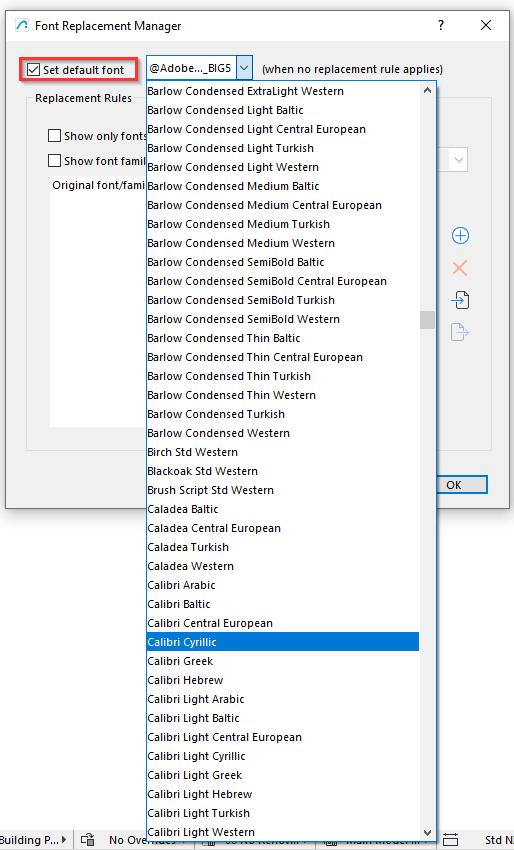
勾选 show only fonts used in the project（仅显示项目中使用的字体）复选框并点击加号后，列表将自动填入项目中的全部字体，供按规则分配。
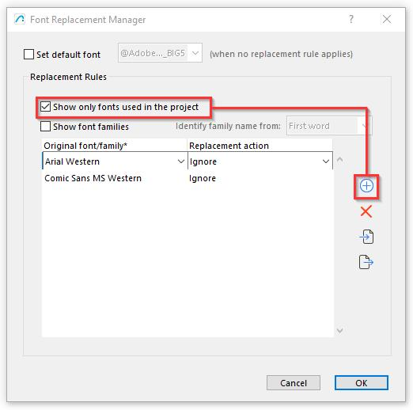
现在我们可以逐个选中每个字体，并选择忽略它，或将其替换为所选字体。这里我们把 Comic Sans 替换为 Calibri。
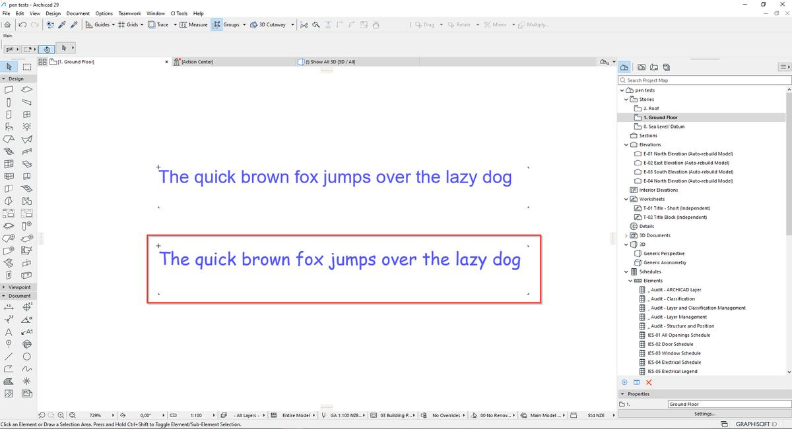
我们在左侧选中 Comic Sans，在右侧选中替换后的字体。
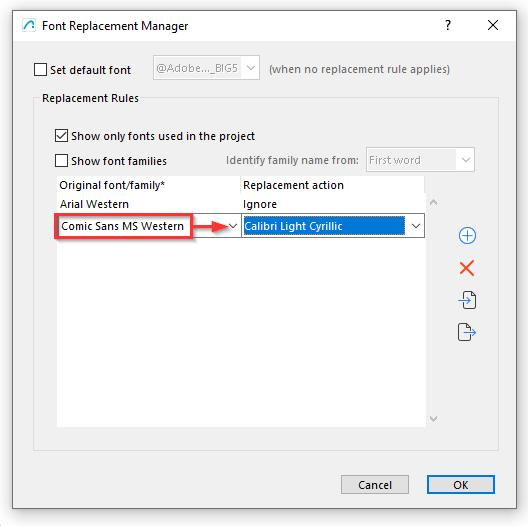
可以看到 Arial 字体被忽略了，而 Comic Sans 已变成 Calibri。
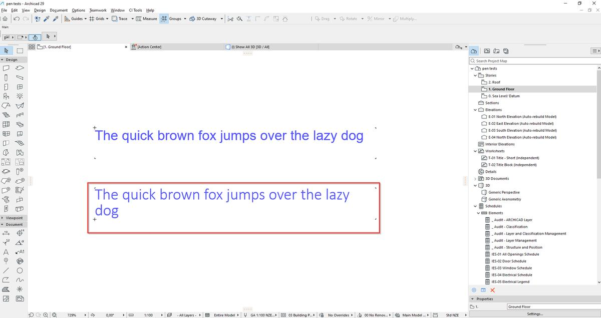
重要
请特别留意 Application to Project Window（应用于项目窗口），因为它决定了哪些内容会被更改；可以通过它对某些文本进行较高精度的控制。
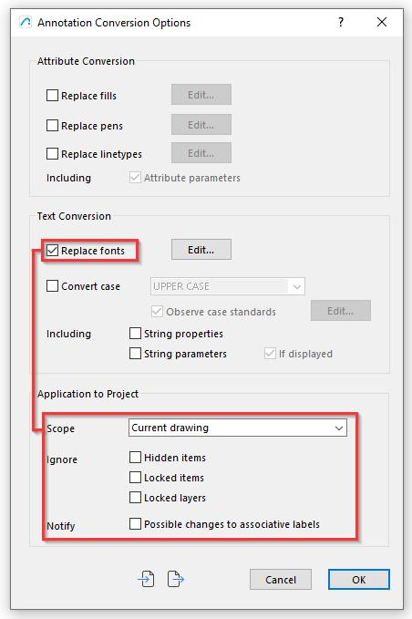
同样可以控制属性转换选项的适用范围。
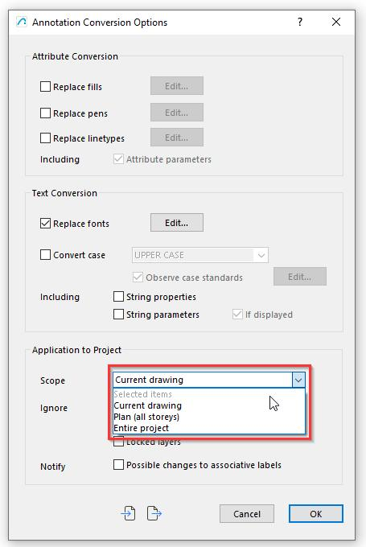
The Annotate in Archicad 29 now allows for the replacement of Fonts:
By activating the Replace Fonts check box, we are able to initiate a rule based Font Replacement Manager by clicking on Edit.
The Set Default Font will apply a Default Font to any Font that has no rule assigned, note this can be used to override all fonts to single font in the project.
By selecting the check box show only fonts used in the project, and clicking on the plus sign the list will populate with all fonts in the project for rule based assignment.
We will now b able to select each font and choose either to Ignore it, or replace it with a Font of our choice, we will change the Comic Sans to Calibri.
We Select the Comic Sans on the left and the replacement on the right.
As we can see the Arial font was ignored, and the Comic Sans has changed to Calibri.
IMPORTANT
Special attention should be given to the Application to Project Window as this determines what will be changed, one can choose to ignore certain text with high level control.
It is also possible to exercise control over where any of the Attribute Conversion Options are applied.
英文原文对照Official English Original
The Annotate in Archicad 29 now allows for the replacement of Fonts:
By activating the Replace Fonts check box, we are able to initiate a rule based Font Replacement Manager by clicking on Edit.
The Set Default Font will apply a Default Font to any Font that has no rule assigned, note this can be used to override all fonts to single font in the project.
By selecting the check box show only fonts used in the project, and clicking on the plus sign the list will populate with all fonts in the project for rule based assignment.
We will now b able to select each font and choose either to Ignore it, or replace it with a Font of our choice, we will change the Comic Sans to Calibri.
We Select the Comic Sans on the left and the replacement on the right.
As we can see the Arial font was ignored, and the Comic Sans has changed to Calibri.
IMPORTANT
Special attention should be given to the Application to Project Window as this determines what will be changed, one can choose to ignore certain text with high level control.
It is also possible to exercise control over where any of the Attribute Conversion Options are applied.